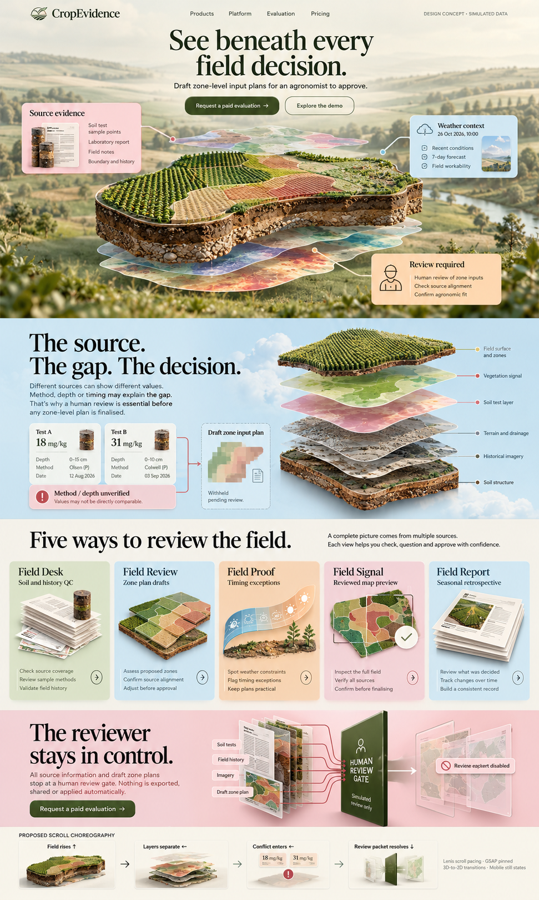
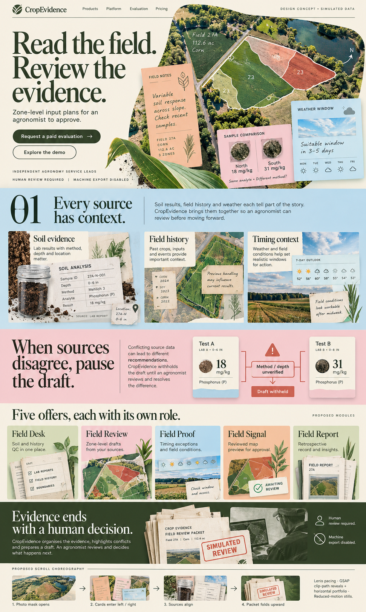
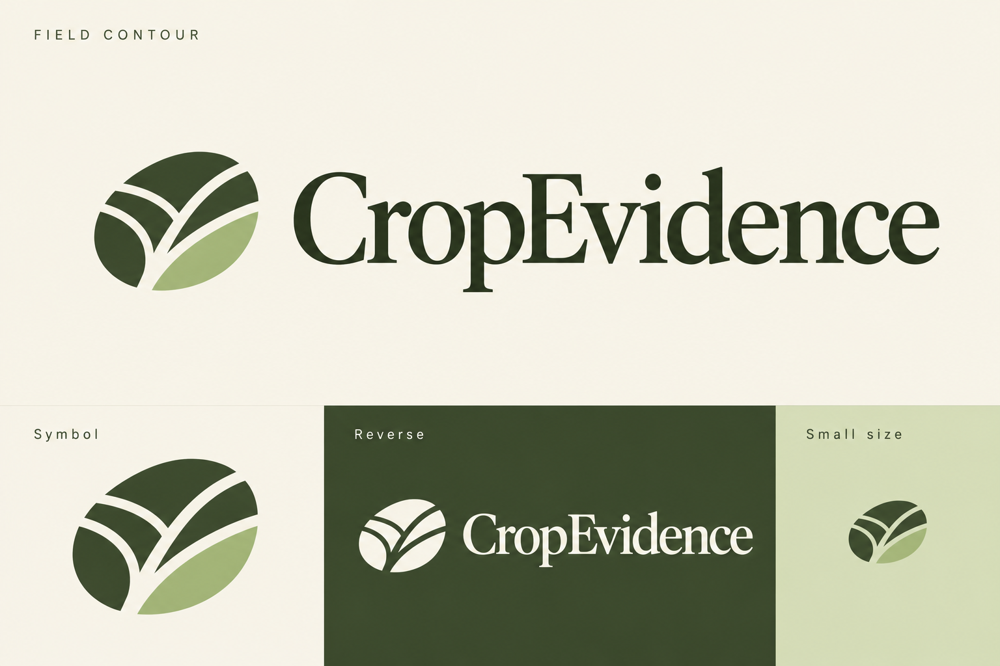
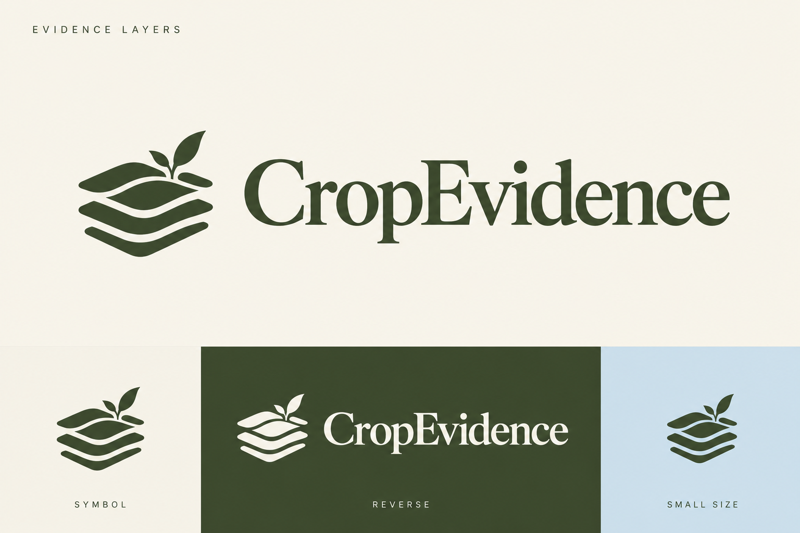
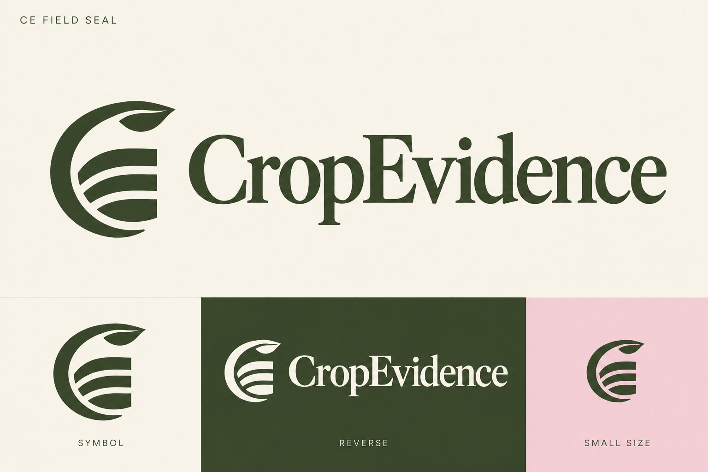

CROPEVIDENCE / CORRECTED VISUAL TARGETS
Your original directions.
Preserved.
The two images you supplied are the visual masters. They are reproduced below unchanged. The earlier expanded compositions are superseded as layout targets.
Homepage · original option 2
Centered headline, floating field, landscape hero, exploded layers, five illustrated offers and blush review gate.


Inner pages · original option 3
Oversized editorial headline, angled aerial map, botanical cutouts, pastel notes, source cards and olive packet conclusion.


Preserve these compositions, proportions, section order, textures and color sequence. Adapt product-specific copy without redesigning the template. Additional required content follows these sections or lives on its relevant page. Motion brings these original scenes to life.
This is a corrected design handoff, not a rebuilt website. The original storyboard strips are design annotations. Final interface text will use consistent simulated records.
Logo option 1

Logo option 2

Logo option 3

Logo boards are generated raster concepts, including standalone symbols and reversed applications. Vector refinement and actual favicon tests follow selection.
Built-in image generation · 26 October 2026 · No logo selected yet